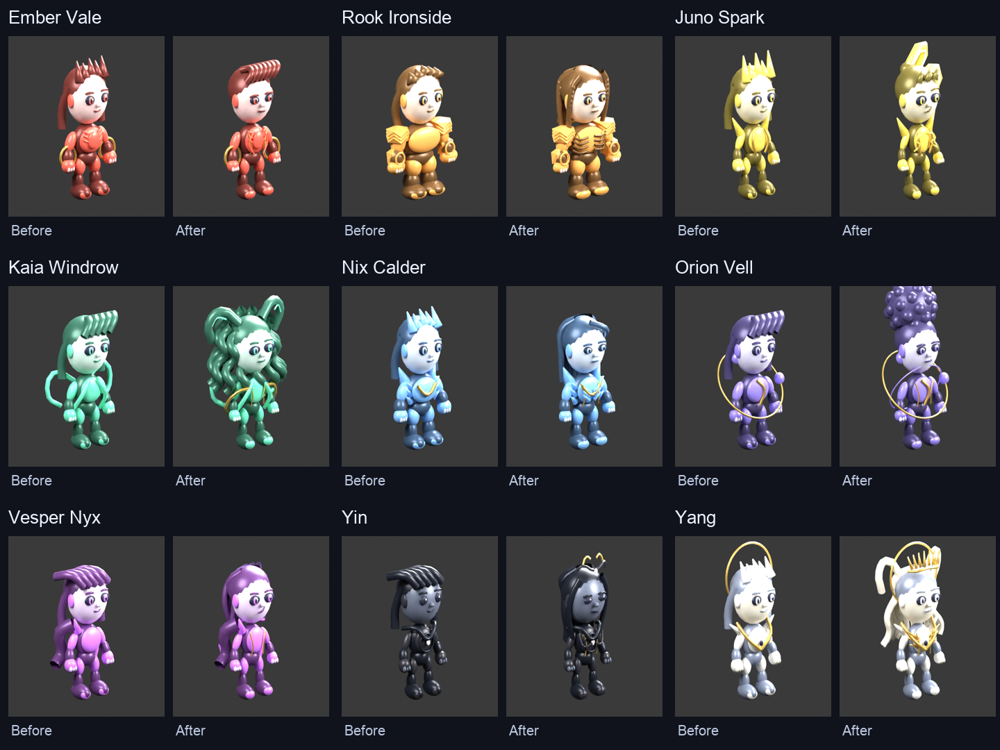
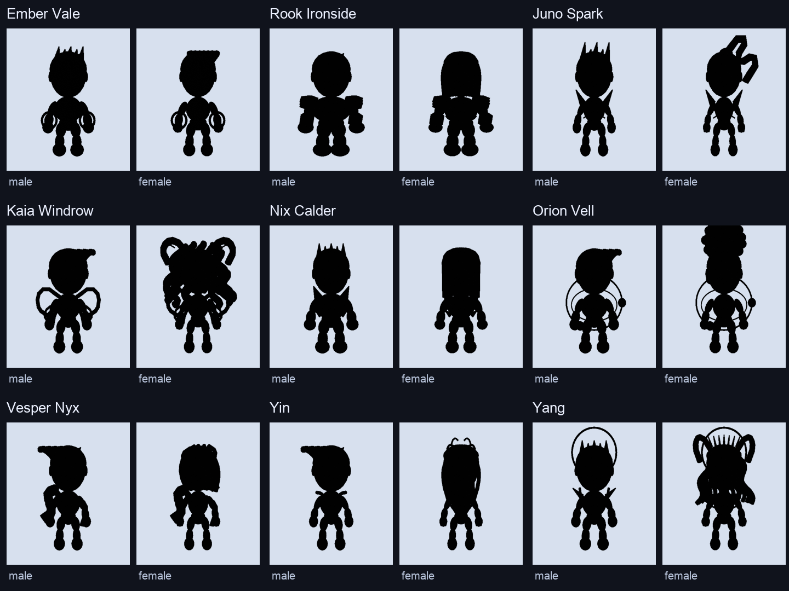
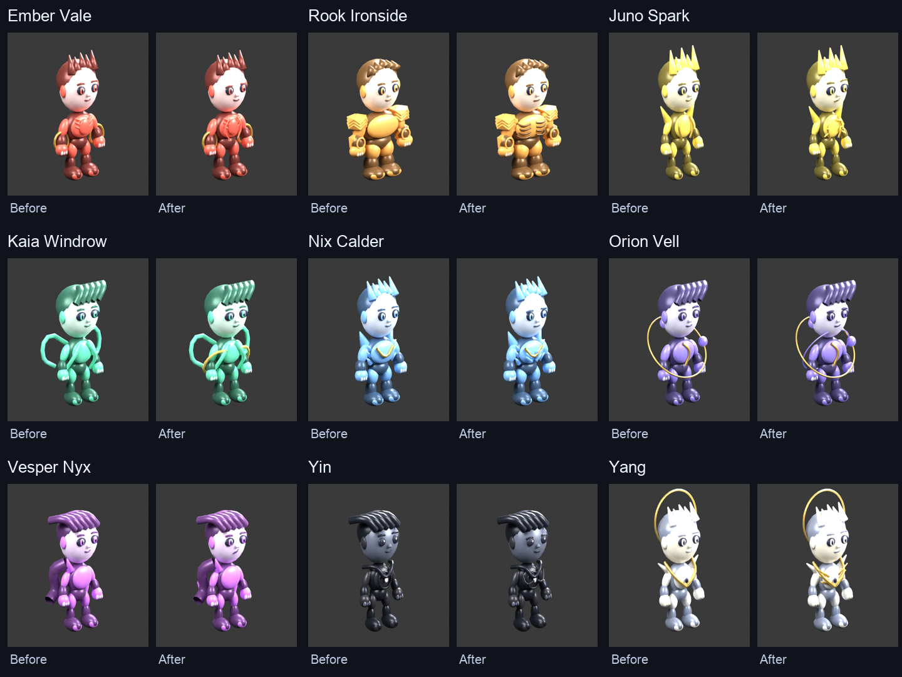
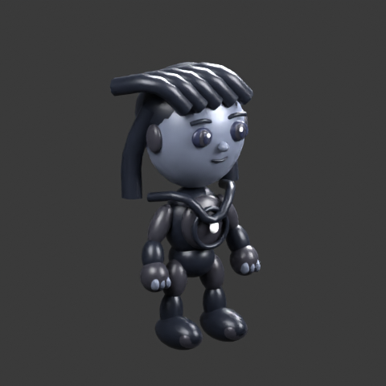
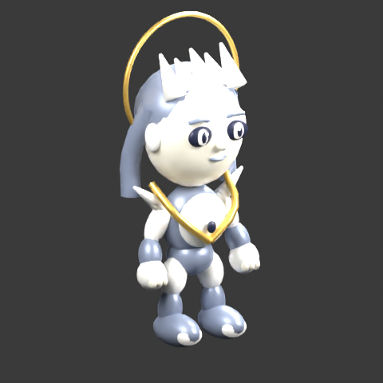
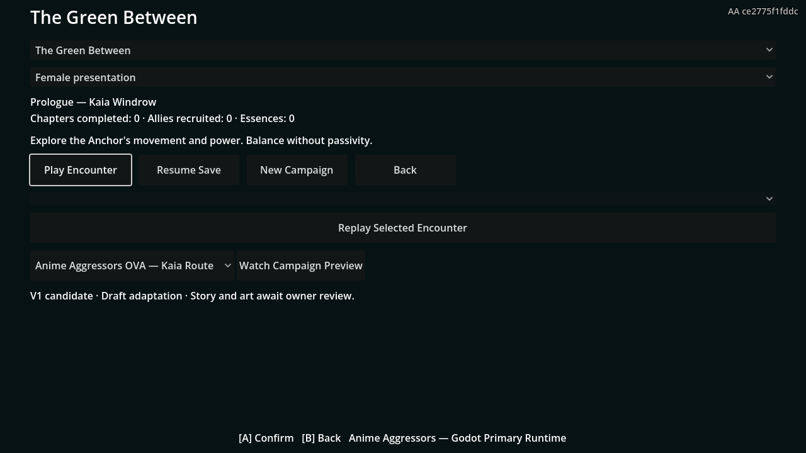

V1 closure checkpoint • Original articulated collectible candidates • Local owner review • October 6 art/capture package retained; October 9 campaign source evidence below
Review the look, recognizability, motion and impact. These are procedural model, key-pose and SFX candidates. Model/clip counts and scripted KOs do not establish finished animation, game feel or full Story completion.
Current scoped validation · 145-node completion matrix · Exact continuation work
The newest owner source controls female hairstyles and variant differentiation. Male hair geometry is preserved. These remain procedural candidates awaiting your review.


Armored collectible foundation retained. Elemental armor accents, Rook strata, phase offsets and cosmic construction remain candidates; final motion, VFX and audio integration is unfinished.



Ten skinned facial morph candidates plus the personality rest face. Combat drives effort, intent and pain; cinematic acting preserves story emotions through idle. Puppet expression strength is constrained.
Battle-camera captures, turntables and move demonstrations use the real Godot Compatibility renderer. Staged training actions exercise natural hitbox polling. A visible demonstration is not a complete form lifecycle test.
Compare all nine fighters in the same staged shipping scene. Natural hitbox polling drives contact feedback; sampling slows the demonstrations. This is candidate evidence, not completed bespoke animation or final VFX taste.
Original filtered-noise, impulse and delay-lattice layers. Current hooks: move startup, light/heavy/special/super impact, confirmed block, KO, selection and existing form transformation. Signature, launch and Puppet/Prismatic samples still require dedicated final timing and mix integration. Audio remains unapproved.
One principal OVA, six Campaign Variations. This preview uses the shared route graph and real BattleScene actors, moves, contact feedback and candidate SFX. The embedded movie is the historical October 6 preview; it does not capture the October 9 campaign changes. Full Puppet/release/Gray/ending production, final screenplay, voices, music and cinematic mix remain unfinished.
Watch access does not grant Story progression or unlocks. Pause, chapter navigation and return are implemented for all seven preview modes.

All 145 nodes bind to source gameplay contracts. Staged source automation exercised seven complete routes and five Convergence nodes, producing 115 BattleScene receipts. All seven working First Loss identities are approved. Only Kaia is initially accessible; earned Gray completion opens the next routes. Debug review and watch playback grant no unlocks. Authored presentation and human playthrough acceptance remain pending.
Ordinary player playthrough and difficulty tuning; full authored acting and animation; fighter-specific combat feel and VFX/SFX taste; non-base form regression coverage; finished continuous Kaia OVA and six Variations; distinct Yin/Yang competitive moves; current rendered transformation/unlock footage; exported full-campaign, Web/Android and PartyLink proof. All human gates and V1_AUTOMATED_READY remain false.
Exact initial baseline matrix · Exact cleanup paths and verification · Candidate asset provenance · Authority lock · Continuation handoff